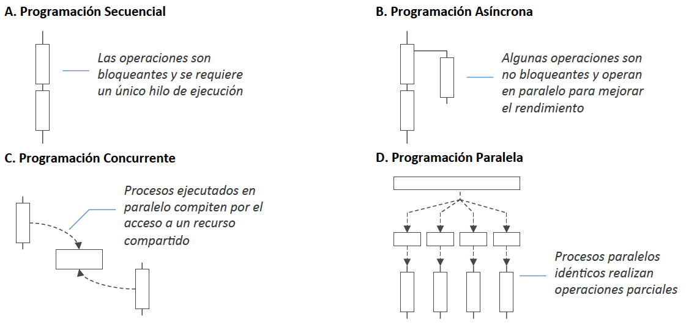
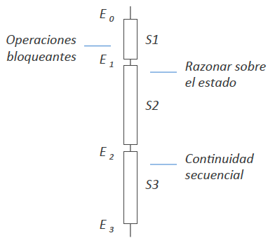
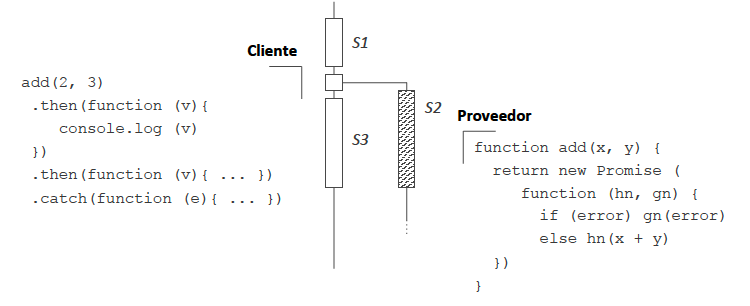

Programación asíncrona¶
La programación asíncrona promueve la definición de operaciones no bloqueantes.

figura por Javier Vélez Reyes, Programación asíncrona en JavaScript
Las funciones no bloqueantes afectan a:
- El estado del programa
- La lógica de continuación del programa
| programación secuencial | programación asíncrona |
|---|---|
|  |  |
| figura por Javier Vélez Reyes, Programación asíncrona en JavaScript |
Modelos de paso de continuaciones¶
Aumentar la aridad de la función no bloqueante en 1 argumento adicional, donde se indica la lógica de continuación.
Callbacks¶
La lógica de continuación se indica mediante una función de retrollamada o callback.
 figura por Javier Vélez Reyes, Programación asíncrona en JavaScript
figura por Javier Vélez Reyes, Programación asíncrona en JavaScript
Ejemplos: implementaciones de listener del ejercicio introductorio
- Con clases anónimas
- Con adaptadores
- Con funciones anónimas o lambdas
Ejemplo: Ajax + jQuery callbacks¶
Ejemplo: callback en Javascript¶
Versión síncrona:
// Versión síncrona
function main() {
r1 = serv1("datos iniciales");
r2 = serv2(r1);
// También se podría haber escrito r2 = serv2(serv1("datos iniciales"))
console.log("Resultado final: { " + r2 + " }");
}
function serv1(parametros) {
return "Tardo en calcular r1 a partir de { " + parametros + " }";
}
function serv2(resultado1) {
return "Tardo en calcular r2 a partir de { " + resultado1 + " }";
}
Ejemplo con callbacks
// Versión asíncrona.
// Las funciones asinc1() y asinc2() admiten un callback
// como segundo parámetro, al cual llamarán pasándole el resultado del cómputo
function main() {
asinc1("datos iniciales", function(r1){
// Tenemos el resultado de asinc1
asinc2(r1, function(r2) {
console.log("Resultado final: { " + r2 + " }");
});
});
}
function asinc1(parametros, callback) {
r1 = "Tardo en calcular r1 a partir de { " + parametros + " }";
callback(r1);
}
function asinc2(resultado1, callback) {
r2 = "Tardo en calcular r2 a partir de { " + resultado1 + " }";
callback(r2);
}
Callback Hell:¶
El uso de callbacks hace el código complejo, repetitivo y difícil de entender, especialmente cuando el tamaño del código crece.
- La anidación empeora si se necesita el resultado de una función para llamar a otra: funciones que son parámetros de otras funciones, que son parámetros de otras, etc.
- El código fuente se va indentando más y más para luego ir deshaciendo esa indentación a medida que se cierran llaves y paréntesis.
- La lógica está al revés: las funciones no devuelven resultados, sino que pasan esos resultados como parámetros a otras funciones; las funciones que manejan la respuesta son también pasadas como parámetros
- El flujo de gestión de errores también se complica y no pueden usarse excepciones.
Promesas¶
Modelo de futuros y promesas
- Futuro: marcador de posición (placeholder), de solo lectura, para una variable que representa el resultado de un cómputo asíncrono
- Promesa: contenedor de una asignación escribible (solo para inicialización), que fija el valor de un futuro.
Los futuros y promesas sirven para desacoplar un valor (el futuro) de cómo éste se calculó (la promesa), permitiendo así la paralelización de los cálculos.

figura por Javier Vélez Reyes, Programación asíncrona en JavaScript
El cliente recibe como respuesta inmediata una abstracción de datos (la Promise) que representa un compromiso de valor futuro, con inyectores (then, catch) para incluir la lógica de continuación.
Las promesas se pueden resolver (resolve) o rechazar (reject):
Se pueden encadenar cálculos usando futuros computables o escuchables, que sirven para indicar a un thread que ejecute una determinada tarea y, cuando termine, se dirija a hacer otra tarea usando el resultado de la tarea anterior.
Promesas en Javascript¶
const promise = new Promise((resolve, reject) => {
// las funciones resolve/reject controlan el destino de la promesa
});
Ejemplo con promesas:
// Versión con promesas
// Ahora asinc1 y asinc2 se supone que devuelven una promesa (que solo resuelve)
function main() {
asinc1("datos iniciales")
.then(function(r1){ return asinc2(r1); })
.then(function(r2){
console.log("Resultado final: " + r2);
}).catch(function(err){
console.log("Error: "+ err.message)
});
}
// Lo anterior puede escribirse más conciso:
function main() {
asinc1("datos iniciales")
.then(asinc2)
.then(function(r2){
console.log("Resultado final: " + r2);
}).catch(function(err){
console.log("Error: "+ err.message)
});
}
function asinc1(parametros) {
return new Promise((resolve, reject) => {
resolve("Tardo en calcular r1 a partir de { " + parametros + " }");
});
}
function asinc2(resultado1) {
return new Promise((resolve, reject) => {
resolve("Tardo en calcular r2 a partir de { " + resultado1 + " }");
});
}
// Si asinc2 devolviera un error
function asinc2(resultado1) {
return new Promise((resolve, reject) => {
reject( new Error("Ha habido un error en el cálculo de r2 a partir de { " + resultado1 + " }"));
});
}
// Salida => "Error: Ha habido un error en el cálculo de r2 a partir de { Tardo en calcular r1 a partir de { datos iniciales } }"
// Si asinc1 devolviera un error
function asinc1(parametros) {
return new Promise((resolve, reject) => {
reject( new Error("Ha habido un error en el cálculo de r1 a partir de { " + parametros + " }"));
});
}
// Salida => "Error: Ha habido un error en el cálculo de r1 a partir de { datos iniciales }"
Solución al Callback Hell:
- Las promesas evitan la anidación y hacen más simple el manejo de errores.
- La ventaja de las promesas es que se pueden encadenar.
-
Una promesa tiene un método
then():.then()recibe una función, que será ejecutada automáticamente cuando la promesa se resuelva. Esta función recibirá como parámetro el valor de la promesa (el resultado esperado)..then()devuelve una nueva promesa, que se resolverá cuando se ejecute la función que le habíamos asociado.- Se pueden encadenar varios
.then()para simular un código secuencial, conforme se van resolviendo promesas.
-
Una promesa tiene un método
catch():- Se puede agregar la gestión de errores de cualquier parte de la cadena de llamadas asíncronas con un solo
.catch() .catch()devuelve una promesa nueva, creando una cadena de promesas- Cualquier error síncrono generado en un
theno uncatchhace que la promesa se rechace, y se llame alcatchmás apropiado
- Se puede agregar la gestión de errores de cualquier parte de la cadena de llamadas asíncronas con un solo
Sintaxis async/await¶
- El prefijo
awaithace que se espere a que se llame a la función asíncrona antes de continuar con la ejecución del programa. - Esto genera un flujo de ejecución de la lógica del programa más fácil de leer y de seguir, pausando la ejecución hasta que se cumpla la promesa.
async/await es azúcar sintáctico para usar promesas con una nueva sintaxis que las oculta y las hace parecer código síncrono:
awaitdelante de una llamada a una función entiende que esa función retorna una promesa.- La ejecución se pausa y sólo se reanuda cuando la promesa haya sido resuelta.
- Entonces
awaitdevuelve como resultado el valor de la promesa.
Ejemplo con async/await en Javascript
async function main() {
r1 = await asinc1("datos iniciales");
r2 = await asinc2(r1);
console.log("Resultado final: { " + r2 + " }");
}
Comparar esta versión asíncrona con la versión síncrona inicial.
Futuros¶
Futuros en Java¶
En Java hay definida una interfaz explícita para los futuros:
- Desde Java 5:
java.util.concurrent.Future - Desde Java 8, inspirado por los
ListenableFuturede Guava:java.util.concurrent.CompletableFuture
Ejemplo: Future en Java
import java.util.concurrent.*;
public class Main {
// Callable<V> = Interfaz funcional que representa a una operación sin args
// y que devuelve un resultado de tipo V (permite checked exceptions)
public static class MyCallable implements Callable<Integer> {
@Override
public Integer call() throws Exception {
Thread.sleep(1000);
return 1;
}
}
public static void main(String[] args) throws Exception{
ExecutorService exec = Executors.newSingleThreadExecutor();
Future<Integer> f = exec.submit(new MyCallable());
System.out.println(f.isDone()); //False
System.out.println(f.get()); //Waits until the task is done, then prints 1
}
}
Ejemplo: CompletableFuture en Java
import java.util.concurrent.*;
import java.util.function.*;
public class Main {
// Supplier<T> = Interfaz funcional que representa a una operación sin args
// y que devuelve un resultado de tipo T (no permite checked exceptions)
public static class MySupplier implements Supplier<Integer> {
@Override
public Integer get() {
try {
Thread.sleep(1000);
} catch (InterruptedException e) {
//Do nothing
}
return 1;
}
}
public static class PlusOne implements Function<Integer, Integer> {
@Override
public Integer apply(Integer x) {
return x + 1;
}
}
public static void main(String[] args) throws Exception {
ExecutorService exec = Executors.newSingleThreadExecutor();
CompletableFuture<Integer> f = CompletableFuture.supplyAsync(new MySupplier(), exec);
System.out.println(f.isDone()); // False
CompletableFuture<Integer> f2 = f.thenApply(new PlusOne());
System.out.println(f2.get()); // Waits until the "calculation" is done, then prints 2
}
}